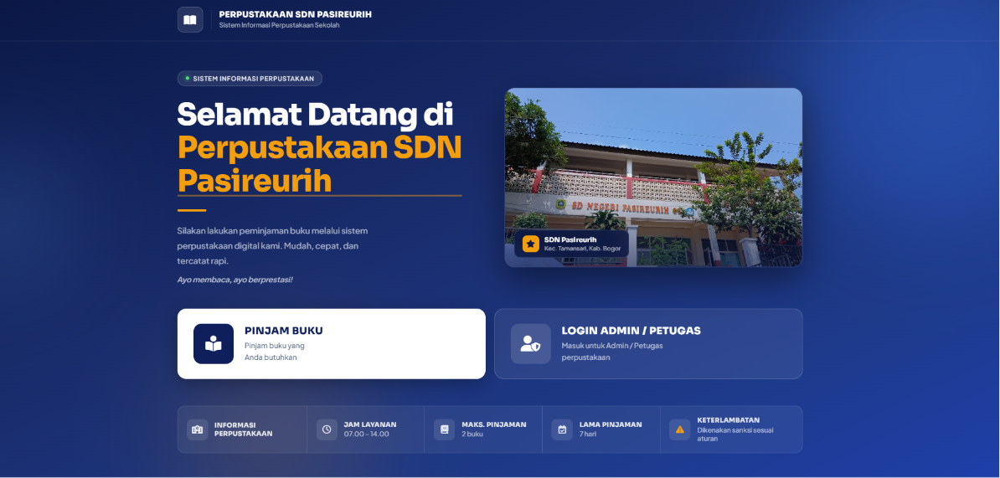
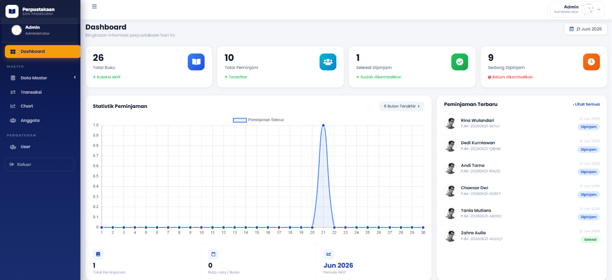
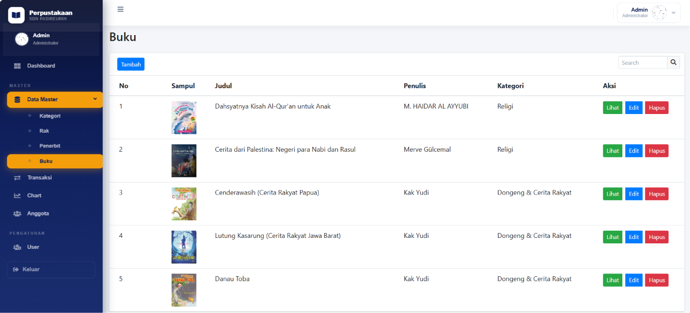
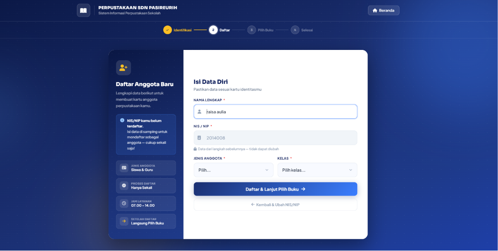

Website Akademik
Platform pendidikan berbasis web dengan fitur dinamis untuk manajemen konten akademik, data siswa, dan informasi sekolah.
View on GitHubWeb Developer × Database Enthusiast ×Data Analytics Explorer
Information Systems student passionate about Web Development, Database Systems, Data Analytics, and Data Science. I enjoy building responsive web applications, designing efficient databases, and transforming data into meaningful insights through continuous learning and real-world projects.

Membangun website responsif dengan HTML, CSS, PHP, JavaScript, dan Laravel dari tampilan hingga logika backend.
Merancang struktur tabel, relasi data, dan query MySQL yang efisien untuk kebutuhan aplikasi.
Mengolah dataset menggunakan Python & pandas untuk menemukan pola dan insight yang actionable.
Menyajikan data dalam bentuk chart dan grafik yang mudah dipahami menggunakan Matplotlib.
Terbiasa menggunakan Git & GitHub untuk version control, termasuk commit, branching, dan pengelolaan repository pada setiap project pengembangan web.
Membangun dashboard interaktif menggunakan Power BI untuk analisis data bisnis, termasuk profitabilitas, performa produk, dan segmentasi pelanggan.
Mempelajari rekayasa perangkat lunak, basis data, analisis sistem, dan pengembangan aplikasi berbasis web.
Membentuk fondasi berpikir analitis dan logis melalui ilmu pengetahuan alam dan program berbasis nilai Islam.
Platform pendidikan berbasis web dengan fitur dinamis untuk manajemen konten akademik, data siswa, dan informasi sekolah.
View on GitHub


Sistem manajemen kepegawaian berbasis Laravel dengan fitur CRUD data pegawai, absensi, dan laporan.
View on GitHub
Analisis dan visualisasi dataset menggunakan Python eksplorasi data, pembersihan, dan penarikan insight statistik.
View on GitHub
Perancangan skema database ERP untuk manajemen inventaris relasi tabel, normalisasi, dan optimasi query.
View on GitHub




Sistem Informasi Perpustakaan merupakan aplikasi berbasis web yang dibuat untuk membantu proses pengelolaan perpustakaan secara digital serta mempermudah admin dalam mengelola data buku, kategori, penerbit, rak, serta mengelola proses peminjaman dan pengembalian buku
View on GitHub